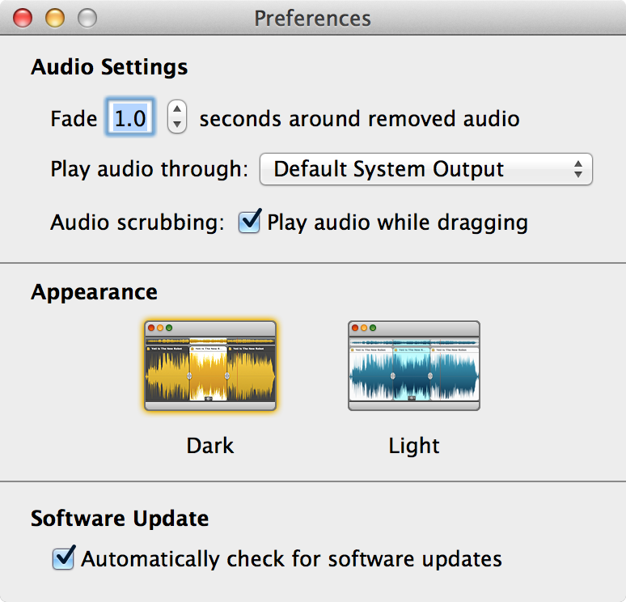

Preferences
Fission's preferences can be accessed from the Fission menu.

Fission's Preferences window
Audio Settings
Fade around removed audio: This setting adjusts the length of audio automatically faded in and out when removing a section of audio from a file, when the Fade Around Removed Audio option in the Clip menu is on. The time length of fades can be adjusted with this preference. To prevent automatic fades altogether, turn the Fade Around Removed Audio menu option off.
Play audio through: Adjust this to change the output device through which audio from Fission plays.
Audio Scrubbing: When this setting is active, audio near the playhead will be heard as the playhead is moved.
Appearance
Appearance: Select between a dark or light theme for Fission.
Software Update
Automatically check for software updates: With this option activated, Fission compares itself to the most current version available from our server and alerts you when a new version is available. Leave this on and Fission will help you stay up-to-date.